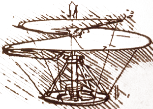

the Da Vinci Machine Projecta multi-language renaissancefor the Java™ Virtual Machine architecture |
 |
Mission
-
We are extending the JVM with first-class architectural support for languages other than Java, especially dynamic languages. This project will prototype a number of extensions to the JVM, so that it can run non-Java languages efficiently, with a performance level comparable to that of Java itself.
Our emphasis is on completing the existing bytecode and execution architecture with general purpose extensions, as opposed to a new feature for just one language, or adjoining an unrelated new execution model.
We want the new languages to co-exist gracefully with Java in the JVM, and to benefit (like Java) from its powerful and mature technologies.
We are looking to remove “pain points” already observed by implementors of successful or influential languages, as opposed to attempting more speculative work on unproven features or niche languages.
Sub-projects with major activity include dynamic invocation, continuations, tail-calls, and interface injection. There is a large number of more speculative, lower-priority sub-projects. These are included in hopes that someone in the community will become excited with us at the prospects of a more dynamic JVM, to the point of sharing in its creation.
Community
- Questions? Try our FAQ.
- Getting involved:
- Prototyping work
- Repository: hg.openjdk.java.net/mlvm/mlvm, mlvm/hotspot, mlvm/jdk. (Note: It is structured as a forest of patches, not of source files.)
- Mailing lists
- mlvm-dev (medium volume as of 7/2009); see archives here.
- Documentation
Note: The following are under construction. Perpetually so, since they are wikis. Please join in! - Specification process — JSR 292
- Issue list
- (issue management TBD)
- Bloggers
- John Rose (project lead)
- Charles Nutter
- Rémi Forax
- Tobias Ivarsson
- Fredrik Öhrström
- Presentations & Articles
- New JDK 7 Feature: Support for Dynamically Typed Languages in the Java Virtual Machine, 2009-07-24, Sun Developer Network article
- Java yields to other languages on the Java Virtual Machine, 2009-07-16 Computerworld
- Toward a Renaissance VM, 2009-06-02 JavaOne TS-5216, San Francisco
- 2009-06-04 JavaOne BOF-5236, San Francisco
- Collaborating on JVM Futures , 2009-06-01 CommunityOne, San Francisco
- New JVM Plumbing: Method Handles and More and Channel 9 interview, 2009-05 Lang.NET in Redmond
- Dynamic VM summit, 2009-03-25 before PyCon in Chicago
- Rémi Forax and Alex Buckley, 2009-02-08 at FOSDEM in Brussels
- Alex Buckley & Brian Goetz, 2008-12-09 at Devoxx08 in Antwerp
- JVM Language Summit, 2008-09-24 at Sun’s Santa Clara campus (more to come in 2009)
- Evolving the Java platform, presented by Ola Bini 2008-03-13 at QCon London
- New Languages on the JVM: Pain Points and Remedies, presented by John Rose and Charles Nutter 2008-01-28 at the Microsoft 2008 Lang.NET Symposium
- Off-project, but related: The future will be about programming languages, 2007-09-11 observations by Ted Neward on the “renaissance”.